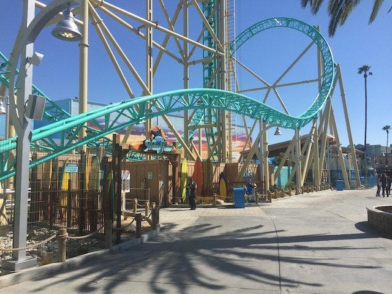
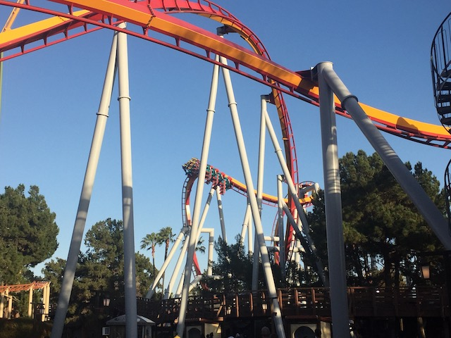
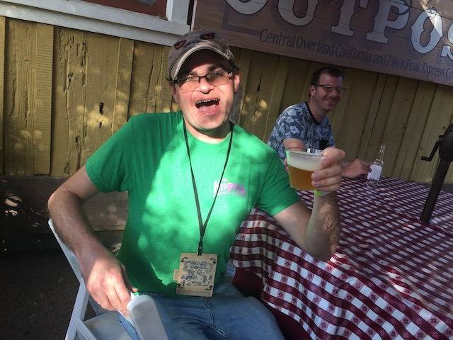

| |
Knotts Boysenberry Festival 2019
All right. I know I want to get back to all the Japan updates and finish those, but it's that time of year again. That's right. We're back at Knotts Berry Farm as BOYSENBERRY FESTIVAL IS BACK!!!! It's the most wonderful time of the year (to go to Knotts Berry Farm). I love it every year it happens, and somehow, it happened again. The Boysenberry Festival topped itself AGAIN!!! But first, let's go over a bonus visit to the park beforehand. Let's ride the flyers!
HOLY SH*T!!! IT HAPPENED!!! I FOUND BUMPER CARS EVEN WORSE THAN SANDBLASTERS!!!! You know what's even worse than stupid bullsh*t One Way Rules? Having a bumper car that won't move for half of the ride, so you're a sitting duck while everyone gets a free hit on you while you have no retaliation. That's just not fun. >=( (Plus, once my car did start moving, you still have to deal with the stupid One Way Rules)
I know it isn't the Boysenberry Festival yet. But let's get a sneak peek into what sorts of things we'll be experiencing with a yearround Boysenberry item. The Boysenberry Latte. Hmm. Not bad. =)

OK. Sean is back in California, and HangTime got added since he last visited Knotts. So let's get him that credit.
 NO!!!! HANGTIME IS CLOSED ALL DAY!!! ='(
NO!!!! HANGTIME IS CLOSED ALL DAY!!! ='(
"So Sean. Tell me, how does it feel to fly out to California, and have the one coaster you still need to ride closed? Let me remind you that this isn't just some crappy new Wacky Worm only valuable for the sake of credit whoring. It's a new, Gerstlauter Eurofighter that is a genuinely really fun ride, unique coaster with no clones. And it's closed when you visit. How does that make you feel?" =P
"Howdy y'all! They say there be gold in this park! Well, then get your asses in the train and start mining!"
So after a ride on Xcelerator, I recieved this new friend. His name is Cinder, and damn it. He just wants some of Chandu's love. =)
The Calico Saloon!? Oh dear! Sean is still depressed about HangTime!
Cinder enjoying the bliss that is the Calico Soda. So happy that they made that a yearround thing and not just limited it to the Boysenberry Festival.
Speaking of things being yearround, my request last year came true! I said that they should bottle the Boysenberry Salsa, and sure enough. They did! Thank you Knotts Berry Farm! =)
We're in California. We don't say ya'll around here. Well, except for me. I have to brush up on my Southern since I'm going back to the South this summer.
Just leave me here guys.

This day has been fun and all, but we need to ride more rides. Let's hop on Silver Bullet.
Thanks for another fun day Knotts Berry Farm.
Gee. I wonder which friend this could be a shout out for?
And of course, when you're with people from out of state, you have to eat at Mrs. Knotts.
The time has come. Yep. THE BOYSENBERRY FESTIVAL IS HERE AGAIN!!!!
 It's like Christmas has come once again. =)
It's like Christmas has come once again. =)
Yep. We at Incrediblecoasters are official testers. Keep reading to see all our takes on this great Boysenberry Food.
We got our tasting cards. Time to go and start eating.
First things first, we're trying out the Boysenberry Chicken Skewers.
HOLY CRAP!!! These Boysenberry Chicken Skewers are AMAZING!!! I know I love the Boysenberry Wings, and somehow, the Skewers are even better. Maybe it's the Chipotle Ranch they also put on the skewers. But....DAMN!!! This was really good.
Mmm. Not a single drop of Boysenberry BBQ Sauce will be wasted.
 With the Chicken Skewers being amazing, I now have very high expectations for the Boysenberry Flank Steak.
With the Chicken Skewers being amazing, I now have very high expectations for the Boysenberry Flank Steak.
Mmm. That Flank Steak really does look delicous.
DAMN!!! And I thought the Boysenberry Chicken Skewers were good. This was so tasty! I mean, yeah. It's steak. So obviously, it's gonna be good. But with the Boysenberry Cream Cheese, it's just....MAN!!! One of the best things ever served at the Boysenberry Festival.
Psst. I hear there's more Boysenberry items just around the riverbend. Just borrow my canoe!
I see the Boysenberry Festival has been taking notes from Cliff. ;)
Mmm. Knotts Boysenberry Bear just can't get enough of that jam.
Looks like we got a sneak peak at what the Boysenberry Festival for 2020. =)
I do love me some Boysenberry Sausage. But that's not what we're getting right now.
Yep. We're having Boysenberry Chilli in a Boysenberry Bread Bowl. It's good. But having an actual boysenberry in the chilli, that just seemed weird. It was good, but after the Chicken Skewers and Flank Steak, the Chilli isn't nearly as good in comparison.
The Chilli is good. But the Boysenberry Bread Bowl....eh. Good, but it just seemed like a regular bread bowl.
 STOP FOCUSING ON ALL THE DELICOUS BOYSENBERRY FOOD! MORE ATTENTION NEEDS TO BE SPENT ON THE BEST RIDE EVER!!!!
STOP FOCUSING ON ALL THE DELICOUS BOYSENBERRY FOOD! MORE ATTENTION NEEDS TO BE SPENT ON THE BEST RIDE EVER!!!!
Ooh. Calico River Rapids is coming along nicely.
I love the wood carvings statues they're making here.
Mmm. That Chocolate Fountain looks really good. I know they have Boysenberry Cheesecake here. But I always skip that every year thanks to the Fun Bun & Fun Stick.
Sorry folks. The Boysenberry Pot Roast is closed! Didn't the big moose out front tell you that!? Or did you bastards pour Boysenberry BBQ sauce on him and eat him!?
No Pot Roast? No problem! We can just go get the new for 2019 item I've been anticipating the most.
Boysenberry Habanero Mac and Cheese. This is the one thing I've always been looking foreward to. Ever since I saw the 2019 menu, the one thing that always caught my eye was the Boysenberry Habanero Mac and Cheese cause yeah. That just screams my name. I really like mac and cheese, and I really like spicy things. And I love the items from the Boysenberry Festival. So Boysenberry Habanero Mac and Cheese just calls my name. And while it wasn't quite as good as I hoped, it's still REALLY good and my favorite thing at the Boysenberry Festival. I really wish they did a bigger serving though.
We got some time to kill. Let's check out one of the shows they're doing for the Boysenberry Festival. This is the Boysenberry Bedlam.
This was...stupid. It was almost entertaining just seeing how dumb the plot of this play was.
"Hand over all the Boysenberry Habanero Mac and Cheese and nobody gets hurt!"
And of course, it has the most intimdating of all climaxes. With a chase scene using rocking horses. =P
 Hey you on the rocking horse! SIT DOWN!!!
Hey you on the rocking horse! SIT DOWN!!!
Jalapeno Cotton Candy!!? I know this is the Boysenberry Festival and I'm not doing any food that isn't from the festival, but I want to try it later on simply because....WHAT THE F*CK!!!? Does that even taste good or is it just f*cked up!!?
Yeah. We came back for the Boysenberry Pot Roast. It was good, but....considering how many good foods they had here, it just wasn't as good as the Flank Steak, the Chicken Skewers, and the Mac and Cheese. Not to mention, the Boysenberry Mashed Potatoes....eh. It seemed weird.
All right. I love all the Boysenberry Meat stuff and all the savory foods. But it's not an unhealthy visit without getting dessert too!
The Boysenberry Dessert Waffle. I know I generally don't have dessert waffles, so I don't have much to compare this to. But it did taste good.
I love hanging around Ghost Town, just trying all the amazing Boysenberry items.
What time of year is it again?
I know I raved about it last year, so I just had to get it again this year. Boysenberry Boba! Time for Tea!
Oh yeah. We still have Boysenberry Jambalaya. It was pretty good, but let's keep it real. I'm guessing that this is all because of the Boysenberry Sausage.
And then, we also have the Boysenberry Cinnamon and Sugar Tortilla Chips with Boysenberry Ice Cream. Now this was really good. The Chips tasted a lot like those Cinnamon Twists you get from Taco Bell. Only crunchier, and more like a chip. So yeah. They're good. And with Boysenberry Ice Cream, it just makes things even better.
All right. Time for the 2nd day of the Boysenberry Festival. And....F*CK!!!! It is PACKED today!
All right. The ONE thing at the Boysenberry Festival I wanted to get, but couldn't was the Berry Beast. Hearing all that it entailed, it looked SO GOOD!!! Unfortunetly, the sandwich is 5 lbs and $40, and I just don't have the appetite, the money, or the people to order the Berry Beast. Hey Knotts, please consider having Mini Berry Beasts for 2020. Cause I REALLY want to try this sandwich.
All right. New this year are the Boysenberry Dole Floats. I absolutely love Dole Whips. So this is naturally gonna be good. And yeah. It is good. Though I do feel like it should've just been the Boysenberry Juice and the Dole Whip. Nevertheless, Andrew is cumming over this.
The park may be swamped today, but thanks to the park actually running all 3 towers, Supereme Scream actually has a tolerable line.
It's intersting to see Xcelerator go backwards for them to take off a train after it breaks down.
Hey Charlie Brown. How's it going?
OK. What the hell happened to Knotts Berry Farm and why did I cut away to my local Yogurtland?
So Yogurtland teamed up with Knotts Berry Farm to create a Boysenberry Pie Frozen Yogurt for a limited time to coincide with the Boysenberry Festival. So naturally, I have to go and try it. Congratulations on getting me to Ventura's Yogurtland for the first time.
So the Boysenberry Pie Frozen Yogurt is really good. Don't worry. I did try it plain (thank you sample cups) before getting a full cup of it and covering it with crap because that's what you do with frozen yogurt (Anyone who still believes that frozen yogurt is a healthy alternative to ice cream is delusional).
All right. Time for Visit #3. We still have more Boysenberry items to eat at the Boysenberry Festival.
 Again, it's super popular. People are starting to notice just how delicous all the Boysenberry items are.
Again, it's super popular. People are starting to notice just how delicous all the Boysenberry items are.
All right. Let's get the Boysenberry Jerk Wings. Surprisingly, this is different from the normal Boysenberry Wings. I'm not sure why....but I prefered the normal Boysenberry Buffalo Wings compared to these new Boysenberry Jerk Chicken Wings. They just seemed saucier and meatier. These seemed bonier for some reason.
Holy Crap! I haven't been inside Coasters Diner in YEARS! What's brining me back here?
The Boysenberry Pie Milkshake. Yep, before Yogurtland had its Boysenberry Pie Frozen Yogurt, Knotts Berry Farm introduced the Boysenberry Pie Milkshake last year, and this year, I decided to try it because I was intrigued. And unlike the Frozen Yogurt, the Boysenberry Pie Milkshake isn't just a milkshake that's flavored like a Boysenberry Pie. No, they take a freaking peice of Boysenberry Pie and blend it up into a milkshake.
See look. You can see chunks of the Boysenberry Pie in the bottom.
The Boysenberry Pie Milkshake. Because you broke your jaw and still want Boysenberry Pie.
 Well, we've had some really good food. But it's time for some coasters. =)
Well, we've had some really good food. But it's time for some coasters. =)
 I still love Xcelerator, but after Dododonpa.....yeah. It lost some of its punch.
I still love Xcelerator, but after Dododonpa.....yeah. It lost some of its punch.
I know its a repeat, but it's so good that I got it again. And....yeah. The sausage itself is still super good. But I think they ran out of good buns because it was stale as f*ck. I pretty much just ate the sausage with the boysenberry condiments and didn't even really eat the bun.
Hmm. Looks like they released some new sodas for the Boysenberry Festival so they still have something seasonal after the Calico Soda became avaliable yearround. These look like they should be sold at Rocket Fizz (Now I suddenly want to go back to Rocket Fizz. It's been too long. DAMN YOU MONEY!!!).
So Jason went and bought us some of these sodas (Thank you). I got the Triple Berry Soda. It was good, though....it had some weird aftertaste. Kind of wanna get it again just to see if it's me or if it always had that.

BOYSENBERRY BEER IS GOOD! BOYSENBERRY BEER IS GOOD! BOYSENBERRY BEER IS GOOD! AND STUFF!
 *gasp* This is our 3rd visit to the Boysenberry Festival and we didn't even mention the Fun Bun & Fun Stick yet!? GET THEM!!! THE TRADITION MUST CONTINUE!!!
*gasp* This is our 3rd visit to the Boysenberry Festival and we didn't even mention the Fun Bun & Fun Stick yet!? GET THEM!!! THE TRADITION MUST CONTINUE!!!
Both are still really good. However, the Fun Stick wasn't as good as usual. It seemed more frozen this year. However, despite that, I'm still #TeamFunStick Fight me Evan! =P
 You know, it's been too long since we last rode Ghostrider. It's a damn good wooden coaster, it's just hard to ride often thanks to lines.
You know, it's been too long since we last rode Ghostrider. It's a damn good wooden coaster, it's just hard to ride often thanks to lines.
Oops. Almost left without trying the Boysenberry Pulled Pork Tostadas. And....yeah. They're good. But nothing special. Probably wouldn't get them again next year.
I want to thank Knotts Berry Farm for the best Boysenberry Festival yet. There were so many good options and so many good things to eat. I particuarly liked the Boysenberry Habanero Mac & Cheese, the Flank Steak, and the Chicken Skewers as well as all the stuff I loved from previous years. So congratulations on getting me to spend more money than I should've. I can't wait to see what sort of tasty concoctions you come up with for 2020 (Mini Berry Beasts please).
Home
|